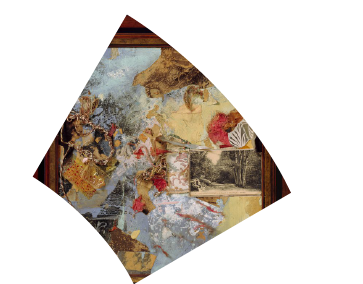
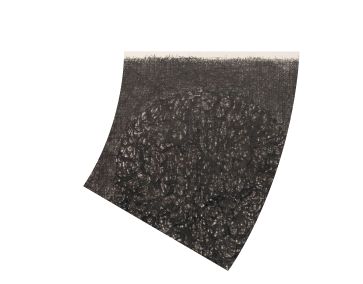
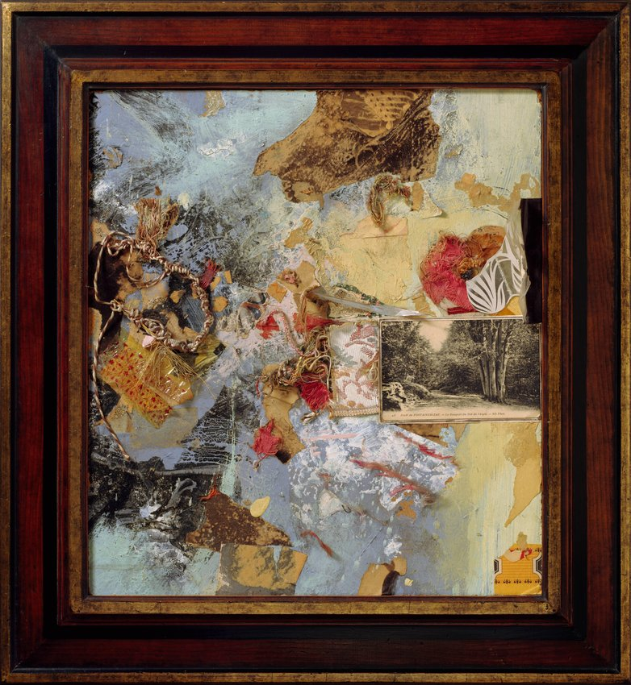
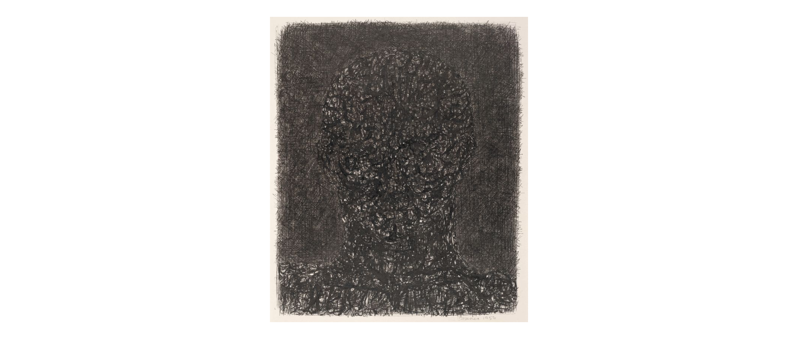
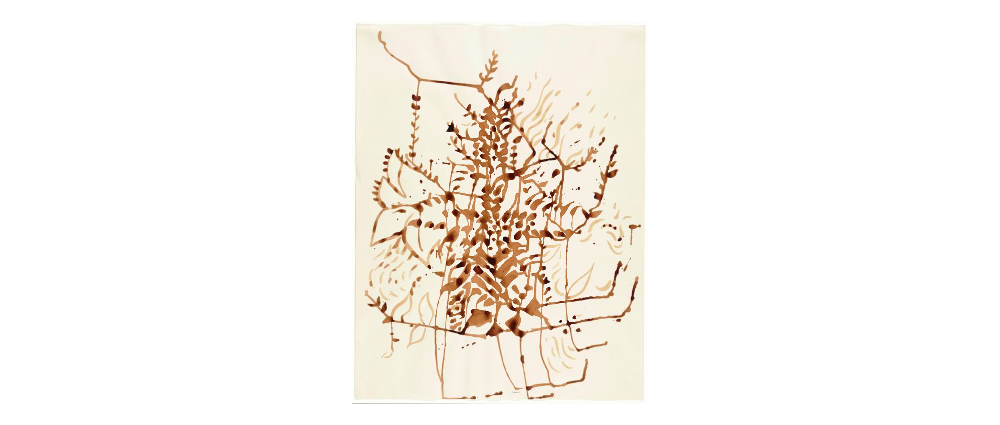
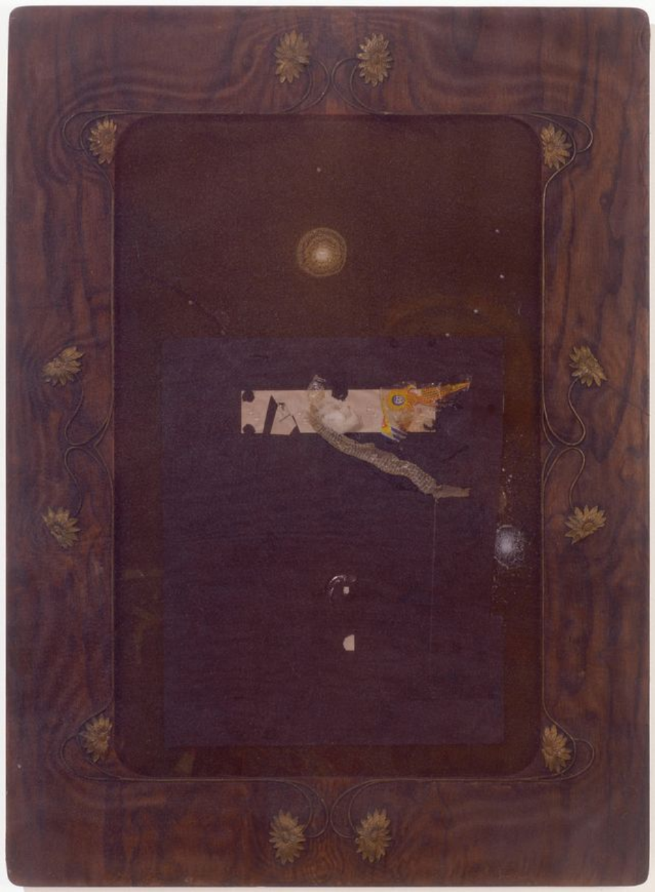
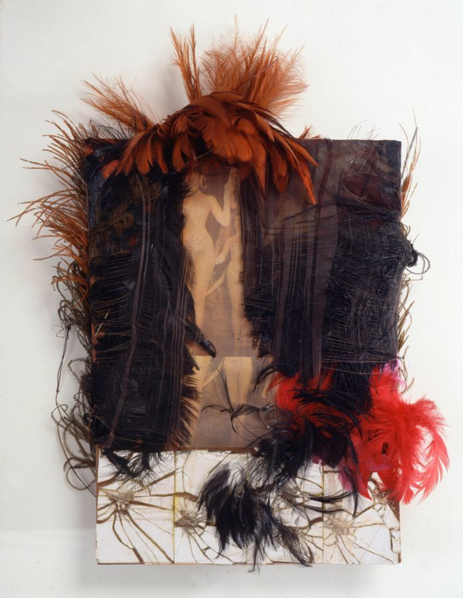
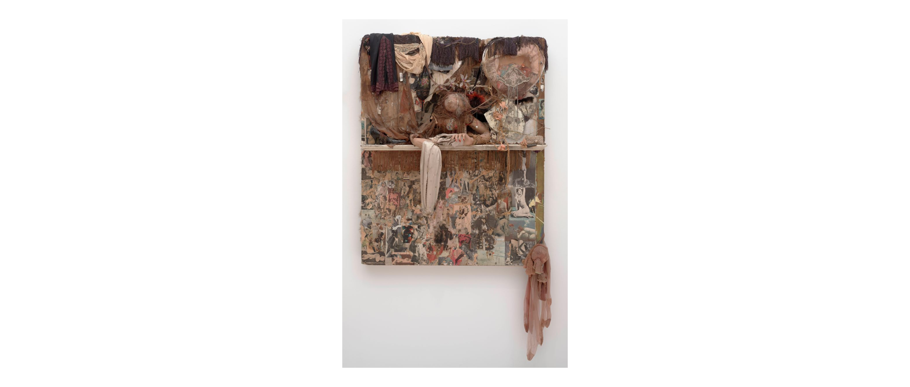

EAGLE NEST (LE BOUQUET DU NID DE L'AIGLE) 1962 Sculpture
Fabric, acrylic paint, cellophane, string, printed paper, straw, corn husk, flower petals and ink on Masonite in found artist's frame
HEART / WORM / MIRROR
1960
Sculpture
Wax, mirror, metal can, metal rings, string, and metallic paper on Masonite
BRUNETTO LATINO
1956
Drawing
Ink on paper

BURNING BUSH (C)
1962
Drawing
Ink on paper

RAY CHARLES/SNAKESKIN
1961
Sculpture
Plastic, nylon, metal, paper, wood, paint on snakeskin tissue
 San Francisco Dancers' Workshop poster
1974
Print
Screenprint
San Francisco Dancers' Workshop poster
1974
Print
Screenprint
HOMAGE TO CHESSMAN
1960
Sculpture
Wood, wax, string, intercom earpiece, lead, mirror, light socket, window shade pull, wire, brass tube, doll arm, and nail
 BURNING BRIGHT
1996
Drawing
Ink on paper mounted on board
BURNING BRIGHT
1996
Drawing
Ink on paper mounted on boardST. VALENTINE'S DAY MASSACRE / HOMAGE TO ERROL FLYNN
1960
Sculpture
Feathers, nylon, mirrors, cut and pasted printed papers, fabric, and metal tack on Masonite
 MUSIC
1960
Sculpture
Ink, paint, wax, cut and pasted papers, postage stamps, string, thread, paper tags, filmstrips, adhesive tape, metal, and adhesive bandage on music paper on music paper mounted on painted board with velvet cover
MUSIC
1960
Sculpture
Ink, paint, wax, cut and pasted papers, postage stamps, string, thread, paper tags, filmstrips, adhesive tape, metal, and adhesive bandage on music paper on music paper mounted on painted board with velvet cover
CHILD
1960
Sculpture
Wax, nylon, cloth, metal, twine, and high chair

LOOKING GLASS
1964
Sculpture
Mannequin arms, dried blowfish, painted wood, mirror, fringe, shoe, heart-shaped, cut and pasted printed papers, paint, nylon, fabric, jewelry, beads, string, doll voice box, fur, artificial flowers, feathers, garter clip, tinsel, and metal on Masonite